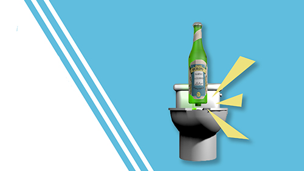

Time line
The Beginning
Picture this. You’ve got a rousingly successful brewing company, exporting your golden liquid to every corner of the world. You sit on your golden throne of beer and ponder (coincidentally while sitting on a throne of the porcelain variety) how you could possibly create an even better beer drinking experience for your disciples. This is exactly the position the owner and operator of “Poo-Peroni” found himself in when he plunked this brain child into existence.
The Mash-up
This mash-up was born out of the mind blowing realization that beer drinkers, you guessed it, spend a lot of time in the bathroom. Many actually bring their beers with them because hey, time is money and we don’t judge (as long as you wash your hands). So why not create a beer specially made for those special trips to the porcelain throne. Owner and CEO had a lot of things to consider when designing the perfect bottle for fueling up, while you empty the tank.
"The Bathroom Beer"
Poo-Peroni is a brand that heightens the beer drinking experience while you lower the water level. Coined as the bathroom beer because you should be able to pop the top,
while you break the seal
